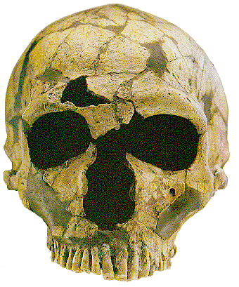

A neandervölgyi ember
|  | 300 ezer évvel ezelőtt megjelent a neandervölgyinek nevezett ember. Ebben a korban már nemcsak Afrikában éltek ősemberek, hanem a hidegebb éghajlatú északibb területeken is. Az akkori ember testének méretei, köztük például az agytérfogat, meghaladták a mai ember méreteit. A homo erectus 150-160 cm-es magasságával szemben, a 2 m-es neandervölgyi óriásnak számít. |